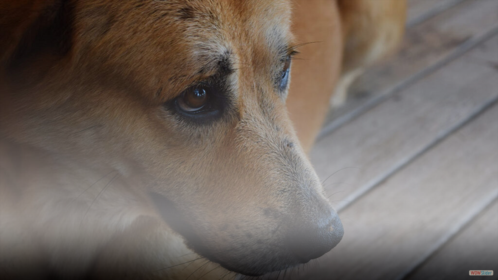
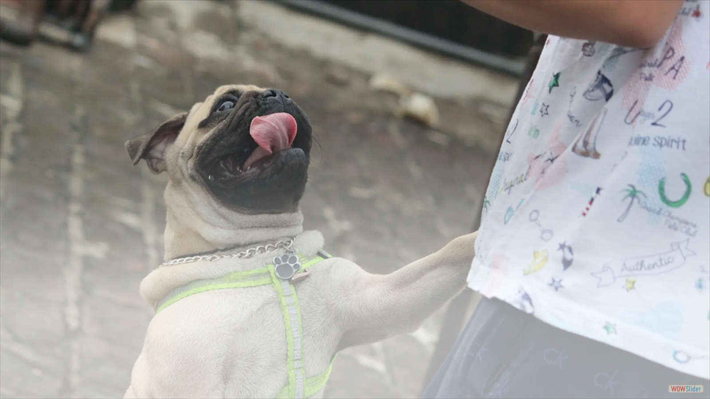
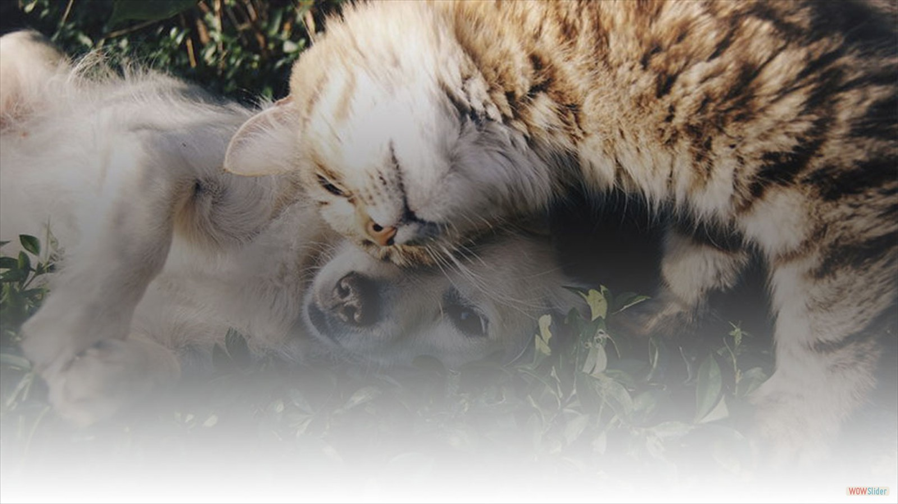
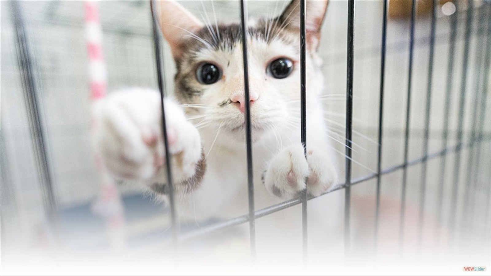

Intervenimos directamente en la asistencia a animales abandonados en situaciones críticas, proporcionándoles atención médica y fomentando su adopción posterior por parte de hogares responsables.
- 
- 
- 
- 
¿QUIÉNES SOMOS?
Somos una comunidad dedicada al rescate, rehabilitación y adopción responsable de gatos y perros en situación de abandono o vulnerabilidad. Nuestro equipo se une para ofrecer a estos animales una segunda opurtinidad de vida. A través de nuestro programa de adopción, buscamos hogares RESPONSABLES donde cada mascota pueda ser parte de una familia amorosa.
Cada vida que salvamos nos impulsa a seguir adelante, convencidos de que cada gato y perro merece amor, protección y un hogar digno.
Nuestra misión es cerrar el círculo que comienza con el rescate, sigue con la recuperación, el albergue y termina con la adopción de un animal en estado de abandono o maltrato, involucrando a la sociedad, creando conciencia, al lograr la identificación con el animal rescatado.
Somos el único refugio de América Latina que tiene más de 200 perritos especiales, algunos de ellos totalmente inválidos, que se movilizan con sus carros o sillita con rueditas..


Organizamos campañas de castración gratuitas y/o de bajo costo en áreas de alta vulnerabilidad donde la presencia estatal es ineficiente y los perros y gatos se reproducen sin control.

Impartimos charlas con el propósito de concientizar sobre temas cruciales como la sobrepoblación animal, la importancia de la castración, la venta de animales y la adopción, la crueldad y el maltrato, el cuidado responsable, la ética animal, entre otros.

Exigimos el cumplimiento de las leyes existentes y respaldamos la presentación de proyectos de ley que beneficien a los animales, contribuyendo así a su protección y bienestar.

Establecemos colaboraciones estrechas con entidades de bien público, organizaciones y activistas que comparten nuestros objetivos, fortaleciendo la red de apoyo y compromiso hacia la causa animal.